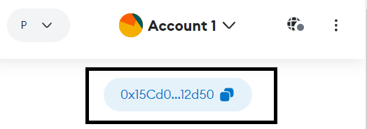

Welcome to My Static Website!
This is a simple static website hosted on Amazon S3 by implementing IAM concepts.
As a token of Gratitude for attending the seminar, I'd like to present an NFT for everyone.
But before that let's learn about blockchain, it's concepts and steps to mint the NFT
Blockchain Introduction
Blockchain is a decentralized digital ledger technology that records transactions across multiple computers in a way that is transparent, secure, and immutable. Each block in the chain contains a timestamp and a link to the previous block, forming a chronological and tamper-proof record of transactions.
Key Features of Blockchain:
- Decentralization: Blockchain operates on a distributed network of computers (nodes), eliminating the need for a central authority to validate transactions. This decentralization enhances security and resilience.
- Transparency: Transactions recorded on the blockchain are visible to all participants, creating a transparent and auditable ledger of activities.
- Immutability: Once a transaction is recorded on the blockchain, it cannot be altered or deleted. This immutability ensures the integrity and reliability of the data.
- Security: Blockchain uses cryptographic techniques to secure transactions and prevent unauthorized access or tampering.
Applications of Blockchain:
- Cryptocurrencies: Blockchain technology underpins cryptocurrencies like Bitcoin and Ethereum, enabling secure peer-to-peer transactions without the need for intermediaries.
- Smart Contracts: Blockchain facilitates the execution of self-executing contracts called smart contracts, which automatically enforce the terms of an agreement when predefined conditions are met.
- Supply Chain Management: Blockchain enhances transparency and traceability in supply chains by recording the movement of goods and verifying their authenticity.
- Digital Identity: Blockchain can be used to create secure and verifiable digital identities, reducing identity theft and fraud.
- Decentralized Finance (DeFi): Blockchain enables the creation of decentralized financial applications, providing access to financial services without traditional intermediaries.
What are NFTs?
NFTs, or Non-Fungible Tokens, are unique digital assets that represent ownership or proof of authenticity of a specific item or piece of content, such as artwork, collectibles, or virtual real estate. Unlike cryptocurrencies like Bitcoin or Ethereum, which are fungible and can be exchanged on a one-to-one basis, each NFT is distinct and cannot be replicated or exchanged on a like-for-like basis.
Uses of NFTs:
- Art and Collectibles: NFTs are commonly used to buy, sell, and trade digital art, collectibles, and other unique digital assets.
- Gaming: NFTs are integrated into various gaming platforms to represent in-game items, characters, and assets with real-world value.
- Real Estate: NFTs can be used to tokenize real estate assets, enabling fractional ownership and easier transfer of property rights.
- Music and Media: NFTs are utilized in the music and media industries to authenticate ownership of digital content and provide direct monetization for creators.
What is MetaMask?
MetaMask is a cryptocurrency wallet and browser extension that allows users to interact with the Ethereum blockchain and decentralized applications (dApps) directly from their web browser. It provides a convenient way to manage Ethereum-based assets, execute transactions, and access decentralized finance (DeFi) protocols.
Key Features of MetaMask:
- Wallet Management: MetaMask enables users to securely store and manage their Ethereum-based assets, including Ether (ETH) and ERC-20 tokens.
- Browser Extension: MetaMask functions as a browser extension for Chrome, Firefox, Brave, and other popular web browsers, allowing seamless integration with web-based Ethereum applications.
- DApp Browser: MetaMask includes a built-in DApp browser that enables users to access and interact with decentralized applications directly from their browser, without the need for additional software or extensions.
- Transaction Signing: MetaMask facilitates the signing of transactions on the Ethereum blockchain, providing users with control over their funds and interactions with dApps.
- Custom Networks: MetaMask supports custom Ethereum networks, allowing users to connect to test networks (e.g., Ropsten, Rinkeby) or private networks for development and testing purposes.
MetaMask Security
Security Features:
MetaMask includes several security features to protect users' funds and private keys, such as encryption of private keys, password protection, and the ability to lock the wallet when not in use.
Recovery Phrase:
During the setup process, MetaMask provides users with a recovery phrase (also known as a seed phrase or mnemonic phrase) consisting of 12 or 24 randomly generated words. This recovery phrase is crucial for restoring access to the wallet if the device is lost, stolen, or damaged. Users must keep this recovery phrase secure and never share it with anyone.
Phishing Protection:
MetaMask includes phishing protection mechanisms to help users identify and avoid malicious websites and scams. However, users should still exercise caution and verify the legitimacy of websites and applications before interacting with them.
Browser Security:
MetaMask operates as a browser extension, meaning it is subject to the security of the web browser it is installed on. Users should ensure they are using a reputable and up-to-date web browser with adequate security features enabled.
Device Security:
The security of MetaMask also depends on the security of the device it is installed on. Users should regularly update their operating system, use reputable antivirus software, and avoid installing unknown or potentially malicious applications.
Private Key Management:
Users should never share their MetaMask private key or recovery phrase with anyone, as this information grants full access to their cryptocurrency funds. Private keys should be stored securely and never stored in plaintext or shared via email, messaging apps, or other insecure channels.
How to Install MetaMask:
- To claim the NFT, installation of Metamask is required.
- Go to the MetaMask website: https://metamask.io/
- Click on the "Get Chrome Extension" or "Get Firefox Add-On" button, depending on your web browser.
- Follow the installation instructions provided by MetaMask to add the extension to your browser.
- Once installed, follow the setup instructions to create a new MetaMask wallet and securely store your recovery phrase.
Adding Polygon Mumbai Testnet
Today we'll be minting our NFT via polygon testnet. And to do this we'll be adding the Mumbai testnet to the metamask wallet which we just created in previous step.
About Polygon
Polygon is a blockchain ecosystem that aims to make sending, programming, and receiving value as easy as sending information over the internet. It operates on its own mainnet, which is a fully developed and functional blockchain network. The Polygon mainnet records, broadcasts, and verifies transactions committed on its distributed ledger. One of the notable features of Polygon is its ability to process up to 65,000 transactions per second, with fees costing less than a fraction of a cent. It offers a more cost-effective solution compared to the Ethereum mainnet, making it an attractive option for developers and users alike.
Mainnet and Mumbai Testnet
In addition to its mainnet, Polygon also has a testnet called Mumbai. The Mumbai testnet replicates the functionality of the Polygon mainnet and allows developers to deploy, test, and execute their decentralized applications (dApps) in a risk-free environment at no cost. It leverages the proof-of-stake (PoS) consensus mechanism and offers high throughput and low transaction fees, similar to the mainnet. Developers can use the Mumbai testnet to experiment with their dApps before deploying them on the Polygon mainnet.
Roles in Development and Testing
Both the Polygon mainnet and Mumbai testnet play crucial roles in the development and testing of blockchain applications. The mainnet provides a fully operational environment for real-world transactions, while the testnet offers a sandbox for developers to refine and debug their dApps before going live.
Steps:
- Visit the link Polygon Testnet Explorer
- Scroll to the bottom of the webpage and click on the Add Polygon Mumbai Network Button
- Click on the Sign / Add Network button in the pop up shown by metamask.
- Voila we've successfully added the Mumbai Testnet.
- Now it's time to fund our wallet with Polygon's Native testnet token which is Matic
- Head over to this link. Now click on the Metamask extension and select the address and paste it in the faucet webpage to request testnet tokens as shown in the below images respectively.
1. 
2. 
- Now click claim and check your Metamask wallet, you can see that your wallet is loaded with 0.025 MATIC.
- Hurray!!! Free money 🤩 But wait these are just testnet tokens which doesn't have any monetary value 😹
Final Step: Mint the NFT
- Head over to this Rarible Testnet NFT Marketplace
- Click Connect Wallet on top right and select Metamask and sign the message shown in the Pop Up.
- Now scroll the web page and select Buy NFT for 0.001 MATIC and proceed with the confirmation steps.
- Congratulations on following till the last step and successfully minting the NFT. You can now view your NFT by clicking the profile icon on top right and by selecting My NFTs
- To view your Transaction in Blockchain Explorer Open your Metamask and select Activity tab click on the Txn showing Direct Purchase and select View on Block Explorer
- You can see that your Txn has successfully got recorded in the Polygon Mumbai Testnet Blockchain.
Thankyou and Have a great Day :))